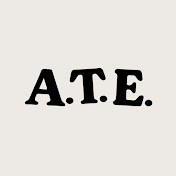

10 minutes ago
 About to Eat
We make 3 different dishes using coffee and talk about it!
The Hand Ripped Noodles Everyone Should Know How to Make
1 day ago
Ethan Chlebowski
This dish is known as Hot oil-seared Biang Biang noodles. The noodles are stretched than bounced on the work surface.
4 months ago
My Name is Andong
Classic potato chips or Kettle Style potato chips - no matter what your favorite is, with this home made potato chips recipe your success is guaranteed. But did you know the story and science behind potato chips?